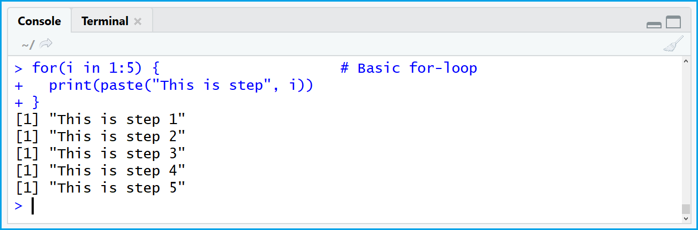

5 Lab IV: Loops, Lists, & Conditional Statements

## Packages
library(tidyverse)
library(mosaic) ## for the Saratoga Houses Dataset
## Data
data("SaratogaHouses")5.1 Lists
5.1.1 What is a list?
- A list is what is called a recursive vector
- A recursive vector is a vector than can contain other vectors or lists
- Think of lists intuitively as a more flexible vector that can contain individual vectors and even dataframes/tibbles
## Creating A List
presidents <- c("Washington", "Adams", "Jefferson", "Madison", "Monroe")
chief_justices <- c("Marshall", "Warren", "Burger", "Rehnquist", "Roberts")
ages <- c(51, 82, 12, 18, 43)
df <- data.frame(presidents, chief_justices)
list_1 <- list(presidents, chief_justices, ages, SaratogaHouses)
## Accessing specific objects in the list
list_1[[3]]## [1] 51 82 12 18 43list_1[[1]]## [1] "Washington" "Adams" "Jefferson" "Madison" "Monroe"5.2 Indexing, Conditional Statements, & if_else()
- We can pull specific values of a variable out with []
- This works with vectors and dataframes/tibbles
## Pulling 4th observation of ages
ages[4]## [1] 18## Pulling 1st observation of presidents
presidents[1]## [1] "Washington"## Pulling 2-4th observation of presidents
presidents[2:4]## [1] "Adams" "Jefferson" "Madison"## Pulling all except the 3rd-5th observation of ages
ages[-3]## [1] 51 82 18 43## Example with a dataframe/tibble
SaratogaHouses[2,4]## [1] 22300SaratogaHouses[1:3, 4:7]## landValue livingArea pctCollege bedrooms
## 1 50000 906 35 2
## 2 22300 1953 51 3
## 3 7300 1944 51 4- You can also use indexing to pull out specific observations of a variable
## Finding the prices for all houses with 3 bathrooms
SaratogaHouses$price[SaratogaHouses$bathrooms == 3]## [1] 248800 169900 293000 205000 240000 235000 187000 293565 285558 133000 250000 322277 336000 359770 303374 500075
## [17] 425000 465000 285000 374900 405000 278500 229000 420000 225000 349900 349900 330000 244900 253000 375000 262000
## [33] 725000 455000 430000 397200 275055 272699 287989 300279 304065 314940 440760 255000 284595 342269 297065 345264
## [49] 319000 307890 410000 395000 360000 281520 225570 314230## With dplyr
SaratogaHouses %>%
filter(bathrooms == 3) %>%
pull(price)## [1] 248800 169900 293000 205000 240000 235000 187000 293565 285558 133000 250000 322277 336000 359770 303374 500075
## [17] 425000 465000 285000 374900 405000 278500 229000 420000 225000 349900 349900 330000 244900 253000 375000 262000
## [33] 725000 455000 430000 397200 275055 272699 287989 300279 304065 314940 440760 255000 284595 342269 297065 345264
## [49] 319000 307890 410000 395000 360000 281520 225570 314230- These conditional statements can get more complicated as well
## Finding the average price of a house with 5 bedrooms, 2 bathrooms, and a fireplace
mean(SaratogaHouses$price[SaratogaHouses$bedrooms == 5 &
SaratogaHouses$bathrooms == 3 &
SaratogaHouses$fireplaces > 0])## [1] 256506.7## With dplyr
SaratogaHouses %>%
filter(bedrooms == 5, bathrooms == 3, fireplaces > 0) %>%
summarise(avg_price = mean(price))## avg_price
## 1 256506.7## Finding the cheapest house with 3 bedrooms on the water
min(SaratogaHouses$price[SaratogaHouses$bedrooms == 3 &
SaratogaHouses$waterfront == "Yes"])## [1] 319000## With dply
SaratogaHouses %>%
filter(bedrooms == 3, waterfront == "Yes") %>%
summarise(cheapest_house = min(price))## cheapest_house
## 1 319000- You can also use
if_else()to create new variables inmutate()
## Showing if_else()
SaratogaHouses %>%
mutate(fireplace = if_else(fireplaces > 0, 1, 0)) %>%
select(fireplace) %>%
slice(1:5)## fireplace
## 1 1
## 2 0
## 3 1
## 4 1
## 5 0SaratogaHouses %>%
mutate(large_house = if_else(rooms > mean(rooms), 1, 0)) %>%
select(large_house) %>%
slice(1:5)## large_house
## 1 0
## 2 0
## 3 1
## 4 0
## 5 05.3 Loops
5.3.1 What is a Loop?
- A central concept of programming that is found in most programming languages
- Loops are control statements that execute one or more statements for a desired number of times
- Loops can be used to iterate applying a function a certain number of times to a specified object(s)
5.3.2 How Loops Work in R
## Basic Loop
for (i in 1:5) {
print(i)
}## [1] 1
## [1] 2
## [1] 3
## [1] 4
## [1] 5- Without
print()- What happened?
## Basic Loop
for (i in 1:5) {
i
}- Works for character and numeric vectors too
## Character Vector
parties <- c("Democratic", "Republican", "Libertarian", "Green")
for (i in parties) {
print(i)
}## [1] "Democratic"
## [1] "Republican"
## [1] "Libertarian"
## [1] "Green"## Numeric Vector
numbers <- c(1, 2, 3, 4, 5)
for (i in numbers) {
print(i)
}## [1] 1
## [1] 2
## [1] 3
## [1] 4
## [1] 5- Let’s write a loop that applies the square root function to a vector of integers
## Square Root Loop
for (i in 1:length(numbers)) {
print(sqrt(i))
}## [1] 1
## [1] 1.414214
## [1] 1.732051
## [1] 2
## [1] 2.2360685.3.3 Conditional Statements & Stopping Loops
## A Loop That Stops
for (i in parties) {
if (i == "Libertarian") {
break
}
print(i)
}## [1] "Democratic"
## [1] "Republican"5.3.4 Conditional Statements & Skipping Iterations
## A Loop That Skips An Iteration
for (i in parties) {
if (i == "Republican") {
next
}
print(i)
}## [1] "Democratic"
## [1] "Libertarian"
## [1] "Green"5.3.5 if else Statements
## Using if else
for (i in numbers) {
if (i > 3) {
print("Number Greater Than 3")
}
else {
print("Number Less Than 4")
}
print(i)
}## [1] "Number Less Than 4"
## [1] 1
## [1] "Number Less Than 4"
## [1] 2
## [1] "Number Less Than 4"
## [1] 3
## [1] "Number Greater Than 3"
## [1] 4
## [1] "Number Greater Than 3"
## [1] 55.3.6 More Complicated Loops
- What is going on here?
- page 146 in Imai & Williams (2022)
## Example from QSS
values <- c(2, 4, 6)
n <- length(values)
results <- rep(NA, n)
for (i in seq_along(values)) {
results[i] <- values[i] * 2
print(str_c(values[i], " times 2 is equal to ", results[i]))
}## [1] "2 times 2 is equal to 4"
## [1] "4 times 2 is equal to 8"
## [1] "6 times 2 is equal to 12"- What is going on here?
## Loop to Calculate A Series of Means
for (i in 1:length(unique(SaratogaHouses$bedrooms))) {
x <- mean(SaratogaHouses$price[SaratogaHouses$bedrooms == i])
names(x) <- i
print(x)
}## 1
## 192771.4
## 2
## 152561.3
## 3
## 200678
## 4
## 265550.6
## 5
## 276577.5
## 6
## 277328.8
## 7
## 226666.7- Same thing with
library(tidyverse)
## Using dplyr()
SaratogaHouses %>%
group_by(bedrooms) %>%
summarise(avg_price = mean(price))## # A tibble: 7 × 2
## bedrooms avg_price
## <int> <dbl>
## 1 1 192771.
## 2 2 152561.
## 3 3 200678.
## 4 4 265551.
## 5 5 276578.
## 6 6 277329.
## 7 7 226667.5.3.7 Conditional Means
- A conditional mean is simply the mean of some variable given when a certain set of conditions are met. We do this in R by indexing and subsetting. As an example, assume that you may be interested in voter turnout by identity group. Thus, you are calculating the mean of voter turnout conditional on identity status. Remember this for regression to help intuitively understand what OLS is doing.
5.3.8 Factor Variables
- A factor variable is a categorical variable that can only take a distinct set of values. An example is marital status which could take single, married, or divorced. A categorical variable like a people’s names is not a factor variable as it could essentially take an infinite number of possible values.
5.4 Lab Questions
5.4.1 Use a loop and library(dplyr) to calculate the maximum price of a house conditional on the number of rooms that a house has.
## Loop
for (i in 1:length(unique(SaratogaHouses$rooms))) {
x <- mean(SaratogaHouses$price[SaratogaHouses$rooms == i], na.rm = T)
names(x) <- i
print(x)
}## 1
## NaN
## 2
## 94500
## 3
## 134156.2
## 4
## 168917.7
## 5
## 167297.6
## 6
## 185313.7
## 7
## 191829
## 8
## 220596.8
## 9
## 245278.8
## 10
## 288567.2
## 11
## 305913.7## With dplyr
SaratogaHouses %>%
group_by(rooms) %>%
summarise(avg_price = mean(price))## # A tibble: 11 × 2
## rooms avg_price
## <int> <dbl>
## 1 2 94500
## 2 3 134156.
## 3 4 168918.
## 4 5 167298.
## 5 6 185314.
## 6 7 191829.
## 7 8 220597.
## 8 9 245279.
## 9 10 288567.
## 10 11 305914.
## 11 12 373219.5.4.2 Create a loop that calculates the maximum and minimum house prices by number of bedrooms. Replicate with library(dplyr)
## With Loop
for (i in 1:length(unique(SaratogaHouses$bedrooms))) {
max_price <- max(SaratogaHouses$price[SaratogaHouses$bedrooms == i], na.rm = T)
min_price <- min(SaratogaHouses$price[SaratogaHouses$bedrooms == i], na.rm = T)
names(max_price) <- i
names(min_price) <- i
print(c(max_price, min_price))
}## 1 1
## 315000 78000
## 2 2
## 655000 10300
## 3 3
## 775000 5000
## 4 4
## 725000 65000
## 5 5
## 775000 119900
## 6 6
## 422680 95000
## 7 7
## 325000 131000## With dplyr
SaratogaHouses %>%
group_by(bedrooms) %>%
summarise(max_price = max(price),
min_price = min(price))## # A tibble: 7 × 3
## bedrooms max_price min_price
## <int> <int> <int>
## 1 1 315000 78000
## 2 2 655000 10300
## 3 3 775000 5000
## 4 4 725000 65000
## 5 5 775000 119900
## 6 6 422680 95000
## 7 7 325000 131000